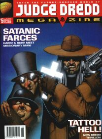

The Stallone-starring Dredd movie saw the House of Tharg re-launch the Megazine as volume #3, alongside a jump-on prog 950 and launch issues (for rebranded Best Ofs) of Classic 2000 AD and Classic Judge Dredd. The movie-Dredd himself (apart from promo-material) was relegated to the spin-off, yoof-targeted comic Judge Dredd: Lawman of the Future.
A lot of the stories in this span suffer from introduction-itis, with far too many of them closing out with dangling threads of "THE END?" only to then not be resurrected. Despite a strong start with the comedy extravaganza of The Three Amigos alongside the beautiful nightmare of Satan, quality dips dramatically towards the end of the sequence with giant fishhooks capturing Judges in the risible Bloodsports, Pan-African Judges disappearing up their own overwrought pantheon and Deathwatch providing a gaudy rendition of Judge Blackadder.
Whilst the beginning of a new volume, this also marks the end of the Meg's fortnightly run, and it switches to monthly from issue 3.14 onwards as it enters the new year.
Judge Dredd
With two slots through the early issues of this stage, Dredd runs a sequence of one-offs with a variety of writers. Chris Standley borrows Wally Squad Judge Lola Palmtree (from Ennis's 1992 Raider five-parter in the prog) for a comedic blood bath in Family Feud. In The Wall, Robbie Morrison allows Dredd to dispense just desserts rather than justice, in a tale that exposes departmental corruption hiding violence against a mutie township.
The big event is a six-parter that brings together the unlikely quest-fellows of Judge Dredd, Mean Angel and Judge Death in The Three Amigos. Clearly revelling in all-out spoofery, Wagner is enjoying the comedy aspects of his characters and turns the dial all the way to eleventy-silly as this surpasses even 1991's Judgement on Gotham in terms of self-parody. Much of the story is taken up by explaining away the central premise as Dredd goes up againt Clinton Box (a thinly-disguised Bill Clinton mutie) and his gang - the Arkansas Redpants (including at one point the entire cast of Star Trek TNG).
Things get mondo simpler in the next phase...
Harmony
Having dipped a toe into corporate hegemony in the previous story, Genocide sees the city go full cyberpunk dystopia as Tyrell Dreen takes over the local Justice Department and enacts martial law. Oddly, Harmony is only referenced in the first episode (not appearing in person til the second) so that we can focus more on the local hard-boiled cop. The story switches from grayscale to colour about mid-way through the run, so there's a sense of things feeling disjointed. The action-over-logic vibe ramps up to a bloody, overwrought finale.
Headcase is an odd fish in which a now city-free Harmony picks up a dangerous head in a jar, and has to battle said head's friends. Se7en meets Fargo?
Harmony returns in 1996...
Missionary Man: Mississippi Burning
An incredibly stylish costume drama with art by Simon Davis: Preacher Cain and Joe go undercover on a Big Sleazy riverboat that's hauling mutie slaves down to New Orleans. Given the timing, this is possibly inspired by the 1994 movie Maverick, in which a high stakes game of poker is played aboard a paddle steamer.
Preacher Cain cameos in Harke & Burr, below...
Anderson, Psi-Division: Satan
A compelling drama leading on directly from Something Wicked, this has Dredd assessing Anderson to see if she's fit for return to active duty, whilst also dealing with the biblical threat of Satan's return to Earth after some time spent in an orbiting prison. Powerful character designs from Arthur Ranson and a deeply researched characterization of the biblical threat mark this out as something special.
Anderson returns in the next phase...
Harke & Burr: Satanic Farces
The occult antique dealers find themselves with access to a dangerous tome, and Preacher Cain cameos as part of the resolution.
More gritty shenanigans for Preacher Cain in the next stage but this marks the final escapade for Harke & Burr...
Pan-African Judges: Fever Of The Gods
It was all a dream! Well, not quite ... all of our heroes end up in a battle with some temperamental gods, but at the end pretty much everything's fine except one of them has a bionic arm and they all need therapy. No small wonder, as people are zapped in half by lightning, sold into slavery by their friends and in many other ways fecked around with by a pantheon of diagnosible minor dieties. It's all a bit fraught, though: and (as with lots of mythology, to be fair) doesn't make much sense from moment to moment.
This is the final series of Pan-African Judges.
Cabal *NEW THRILL*
The Exorcists (a Psi-Div specialty team) go up against a demon with fairly dire consequences.
This hints at more, but is a one and done.
Deathwatch: Faust & Falsehood *NEW THRILL*
It's Judge Blackadder, as a Brit-Cit Judge is accidentally sent back in time to hang out at Mrs. Miggin's Pie shop, stage plays and combat time-traveling demonic entities. It sounds good, and there's some definite energy there, but the Blackadder riffing is too obvious and the forced bonhomie a little too hey nonny to work well. (Reminds me a bit of the The Order, in the sense that too many characters get introduced in a bundle, and it's in the past but breaks the rules.)
Tis a one and done.
Karyn, Psi: Visions
Uhm...it certainly is replete with visions, but perhaps to the extent that the reader is left none the wiser.
Karyn returns in the next issue's Hershey...
Judge Hershey
Karyn (Psi) works alongside Hershey in the two-part Spider in the Web, in which a surviving Mega-City Two Judge seeks revenge for the destruction of her city during the Judgement Day debacle. There are more international concerns in The Enemy, in which a splinter group of Judges resent peace negotiations being held between Chief Judge Volt and the Sovs.
Hershey returns later in the volume, and Karyn may cameo elswhere but definitely shows up in 2004's Judge Dredd adventure Gulag...
|  | ||
| Meg 3.03: Judge Dredd by Trevor Hairsine |
Meg 3.04: Judge Anderson by Mark Wilkinson |
Meg 3.05: Missionary Man by Jason Brashill |